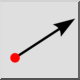

Erstellt automatisch eine Linie des gleichen Typs wie eine ausgewählte andere Linie. Diese Option ist für das Werkzeug zum Erstellen von parallelen Linien verfügbar.
Erstellt Liniensegmente von einem Startpunkt bis zu einem Endpunkt.
Erzeugt unendliche Linien, die durch zwei vorgegebene Punkte verlaufen. Diese werden manchmal auch als X-Linien oder Konstruktionslinien bezeichnet.

Erzeugt Strahlen von einem bestimmten Startpunkt aus, durch einen anderen Punkt mit einer unendlichen Länge.